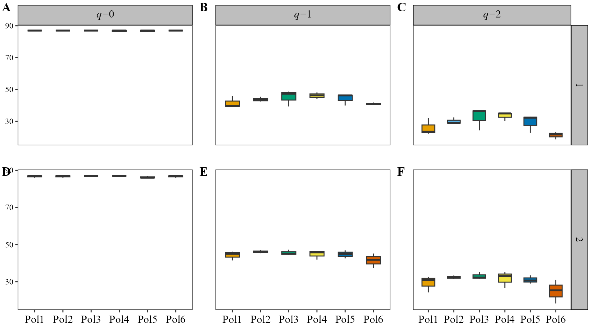
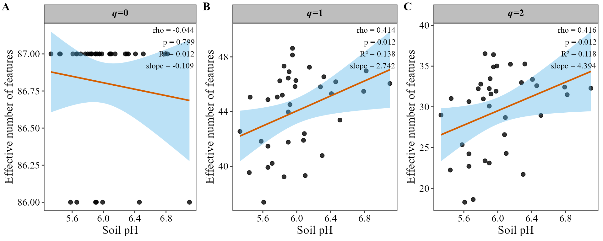
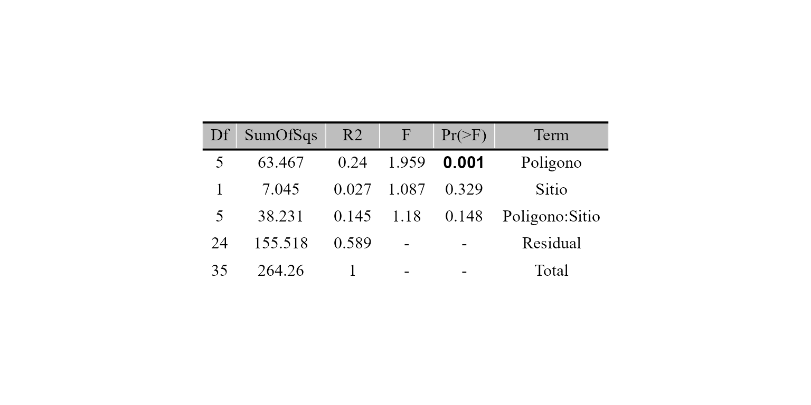
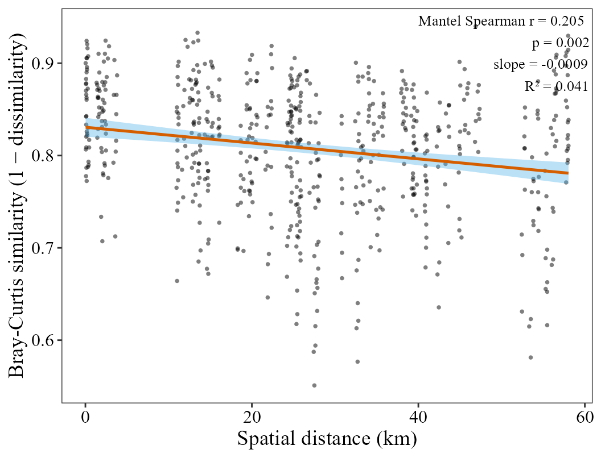
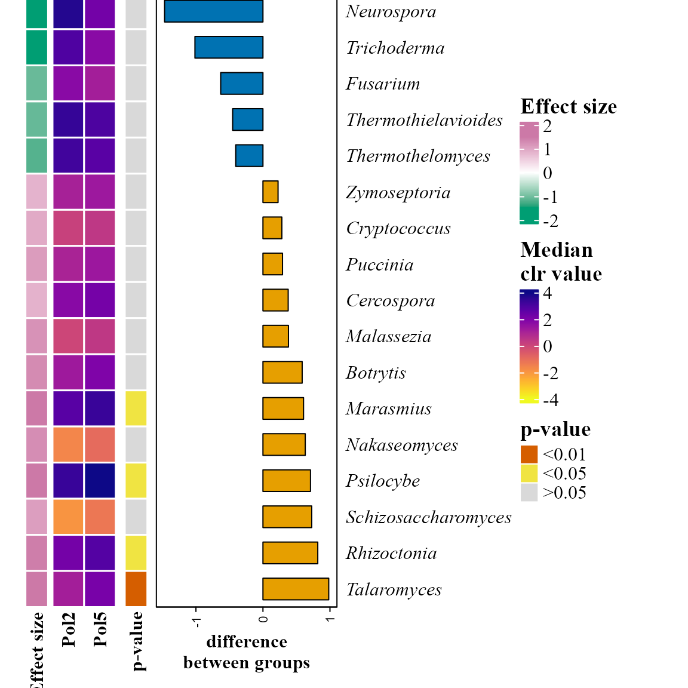
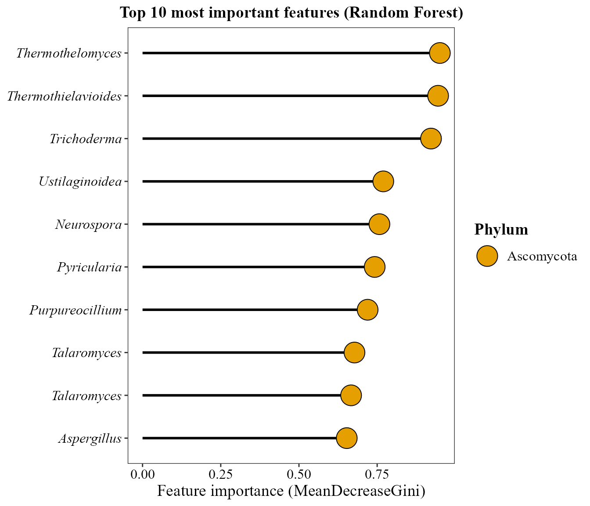
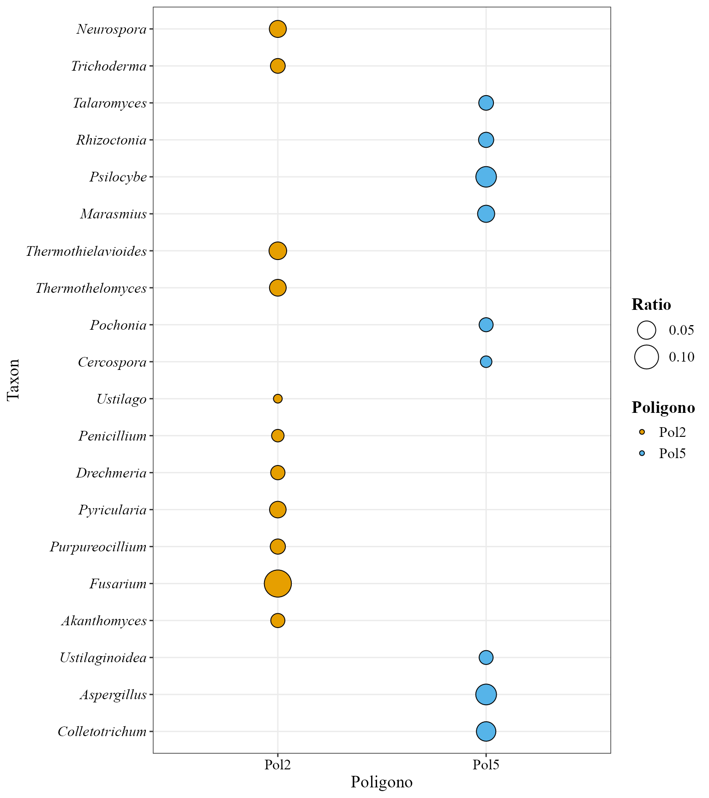
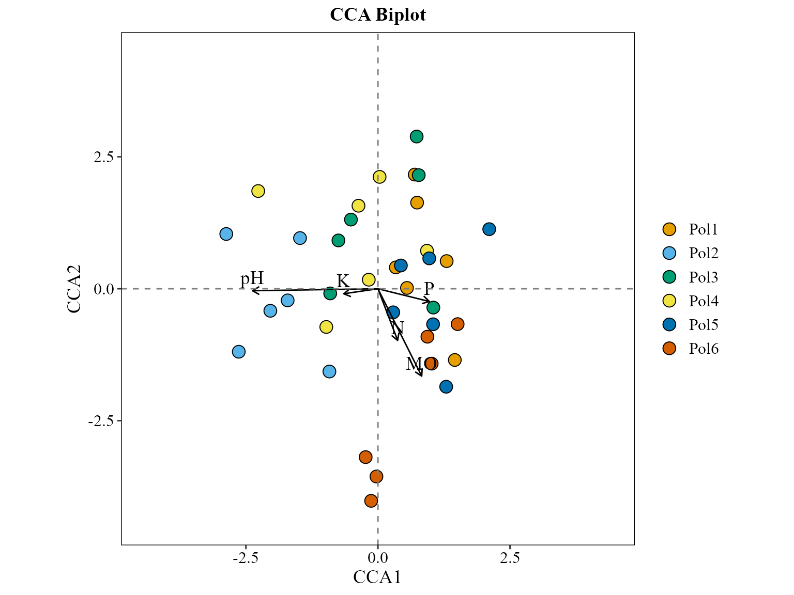

🍄 This tutorial shows how to use MicroBioMeta on
shotgun metagenomic data, as an alternative to the
amplicon (metabarcoding) workflow covered in the Metabarcoding vignette. The functions and
most of their parameters are exactly the same across both workflows, so
they aren’t re-explained here — only what’s specific to metagenomic data
is.
For this example, reads were taxonomically classified with Kraken2
and abundance-corrected at the species level with Bracken.
The data comes from forest soils along the Iztaccíhuatl-Popocatépetl (PNIP) and La Malinche (PNML) transects, Central Mexico:
Raw data, metadata and the original analysis scripts: github.com/Steph0522/Fungal_Metagenomes_PNIP_PNML
💻 Loading data
First, let’s load MicroBioMeta and
tidyverse (used for data wrangling):
Unlike the QIIME2 workflow in the metabarcoding vignette, there’s no
.qza import step here — Kraken2/Bracken output is plain
text. Each sample was processed separately, so
bracken_species reports were merged into a single table
beforehand (one column per sample, named
kraken_pluspfp_<id_metagenome>_report_bracken_species)
with a taxonomy column already attached as
the last column:
table_kraken <- read.delim("articles/data/table_kraken.txt", row.names = 1, check.names = FALSE)
table_kraken[1:3, c(1:2, ncol(table_kraken))]## kraken_pluspfp_100_report_bracken_species
## 101028 1302
## 36050 161
## 56646 108
## kraken_pluspfp_105_report_bracken_species
## 101028 1066
## 36050 345
## 56646 203
## taxonomy
## 101028 k__Eukaryota; p__Ascomycota; c__Sordariomycetes; o__Hypocreales; f__Nectriaceae; g__Fusarium; s__pseudograminearum
## 36050 k__Eukaryota; p__Ascomycota; c__Sordariomycetes; o__Hypocreales; f__Nectriaceae; g__Fusarium; s__poae
## 56646 k__Eukaryota; p__Ascomycota; c__Sordariomycetes; o__Hypocreales; f__Nectriaceae; g__Fusarium; s__venenatumBecause taxonomy already ships with the table,
merge_feature_taxonomy() isn’t needed for this dataset —
it’s only required when counts and taxonomy come as two separate
objects, as in the metabarcoding example.
⚠️ Taxonomy strings from Kraken2 use a
k__/p__/c__/… prefix like
SILVA/GTDB, but ranks are separated by "; " (semicolon
and space) instead of ";".
MicroBioMeta already accounts for this wherever a
taxonomy_db argument exists — just pass
taxonomy_db = "Kraken2".
Now the metadata. These sites were sampled in two seasons (dry/secas in March and rainy/lluvias in September), but the metagenomes were sequenced only once per site — from the dry-season sampling — so that’s the metadata to use here; the rainy-season file records the same sites’ soil chemistry at a different time of year and doesn’t correspond to a separate set of metagenomes.
metadata_meta <- read.delim("articles/data/metadata_metagenomic.txt", check.names = FALSE)
head(metadata_meta[, 1:10])## SAMPLEID id_sequence id_metagenome Poligono Sitio Transecto id_new id_fisicoq
## 1 P1S1T1 111 140 1 1 1 30 30
## 2 P1S1T2 112 152 1 1 2 13 <NA>
## 3 P1S1T3 113 164 1 1 3 21 21
## 4 P1S2T1 121 176 1 2 1 11 11
## 5 P1S2T2 122 188 1 2 2 33 13,33
## 6 P1S2T3 123 121 1 2 3 12 12
## Sites Names
## 1 1 Tetlanohcan 1
## 2 1 Tetlanohcan 1
## 3 1 Tetlanohcan 1
## 4 2 Tetlanohcan 2
## 5 2 Tetlanohcan 2
## 6 2 Tetlanohcan 2Kraken column names encode a id_metagenome number
(e.g. kraken_pluspfp_100_report_bracken_species) rather
than the sample’s actual ID, so we recover it with a regular expression
and use metadata_meta$id_metagenome to rename each column
to its SampleID:
sample_cols <- setdiff(colnames(table_kraken), "taxonomy")
id_metagenome <- as.integer(gsub("kraken_pluspfp_|_report_bracken_species", "", sample_cols))
colnames(table_kraken)[match(sample_cols, colnames(table_kraken))] <-
metadata_meta$SAMPLEID[match(id_metagenome, metadata_meta$id_metagenome)]Two metadata columns we’ll use repeatedly below as grouping variables
— Poligono (6 sampling blocks, 6 replicates each) and
Sitio (2 sub-sites per block) — come in as plain numbers.
Sitio just needs to be character so it’s treated as a group
rather than a continuous covariate; Poligono is relabeled
to "Pol1"…"Pol6" with explicit,
numerically-sorted factor levels, so every plot below lists/facets the
blocks in that order instead of whatever order they happen to first
appear in the data:
metadata_meta$Poligono <- factor(paste0("Pol", metadata_meta$Poligono), levels = paste0("Pol", 1:6))
metadata_meta$Sitio <- as.character(metadata_meta$Sitio)table_meta’s sample columns are also reordered to match
metadata_meta’s row order (rather than the ascending
id_metagenome order they came in), for the same reason —
several plotting functions derive their group order from column/row
appearance order:
table_meta <- table_kraken[, c(metadata_meta$SAMPLEID, "taxonomy")]table_meta is now in the same
taxonomy-as-last-column format used throughout the package,
ready for every MicroBioMeta function — equivalent to
table_bac/table_fung in the metabarcoding
vignette.
Unlike the metabarcoding vignette (where geographic coordinates
weren’t available and had to be simulated for the
beta_decay_plot() example), this dataset’s original source
includes real GPS coordinates for each sampling point.
Joining them in by
Poligono/Sitio/Transecto lets us
use actual, not simulated, spatial distances below:
coord_meta <- read.csv("articles/data/coord_metagenomic.csv") %>%
dplyr::rename(Poligono_num = pol) %>%
dplyr::select(Poligono_num, Sitio, Transecto, Latitude, Longitude)
metadata_meta <- metadata_meta %>%
dplyr::mutate(Poligono_num = as.integer(gsub("Pol", "", Poligono)), Sitio = as.integer(Sitio)) %>%
dplyr::left_join(coord_meta, by = c("Poligono_num", "Sitio", "Transecto")) %>%
dplyr::mutate(Sitio = as.character(Sitio))📊 Composition exploration
📊 Abundance barplot
Same function as in the metabarcoding vignette; the only difference
is taxonomy_db = "Kraken2", which tells the
taxonomy-parsing logic to expect Kraken2/Bracken-style strings.
abundance_bar_plot(table = table_meta,
metadata = metadata_meta,
taxonomy_db = "Kraken2",
level = "genus",
top_n = 20,
x_col = "Poligono",
x_axis_title = "Polygons",
add_remained = TRUE,
label = "Genus",
save_table = FALSE)
🖥️ Abundance heatmap
Kraken2/Bracken taxa aren’t ASVs (there’s no sequence-variant
denoising step in a shotgun metagenomic workflow), so
feature_prefix = "Taxon" is used here instead of the
default "ASV" row-label prefix.
abundance_heatmap_plot(table = table_meta,
metadata = metadata_meta,
top_n = 20,
show_column_names = FALSE,
condition1 = "Poligono",
feature_prefix = "Taxon")
📊 Alpha diversity

📊 Alpha diversity visualization
fill_col is the same as x_col here, so the
legend would just repeat the x-axis tick labels -
show_legend = FALSE drops it.
alpha_hill_plot(table = table_meta,
metadata = metadata_meta,
x_col = "Poligono",
fill_col = "Poligono",
facet_by = "Sitio",
facet_orientation = "horizontal",
show_legend = FALSE,
save_table = FALSE)
Richness (q=0) is nearly saturated and flat across blocks here — this genus-level Bracken table simply doesn’t have much room left to vary at q=0 — while q=1 and q=2 (which weight by relative abundance) do pick up differences between blocks.
Alpha diversity along a continuous gradient
alpha_decay_plot(table = table_meta,
metadata = metadata_meta,
cont_var = "pH",
x_axis_title = "Soil pH")
Diversity at q=1 and q=2 increases significantly with soil pH; q=0 doesn’t, for the same ceiling-effect reason as above.
Beta diversity
Ordination of community composition
The CLR-based distance = "compositional" (used for PCA
in the metabarcoding vignette) is dominated here by a single
compositionally extreme sample, which stretches the plot and squashes
everything else into one corner. NMDS on Aitchison distance is far less
sensitive to that one sample, so it’s used instead.
beta_ord_plot(table = table_meta,
metadata = metadata_meta,
distance = "aitchison",
ordination = "NMDS",
group_col = "Poligono")## Run 0 stress 0.1641152
## Run 1 stress 0.164022
## ... New best solution
## ... Procrustes: rmse 0.1118206 max resid 0.5828417
## Run 2 stress 0.1739101
## Run 3 stress 0.1944567
## Run 4 stress 0.1681097
## Run 5 stress 0.1641153
## ... Procrustes: rmse 0.1118306 max resid 0.580993
## Run 6 stress 0.1640217
## ... New best solution
## ... Procrustes: rmse 0.0004597493 max resid 0.002270787
## ... Similar to previous best
## Run 7 stress 0.1641152
## ... Procrustes: rmse 0.1117048 max resid 0.5810741
## Run 8 stress 0.1672016
## Run 9 stress 0.1737781
## Run 10 stress 0.1893277
## Run 11 stress 0.1671084
## Run 12 stress 0.3950341
## Run 13 stress 0.1671888
## Run 14 stress 0.1738007
## Run 15 stress 0.1680264
## Run 16 stress 0.1681089
## Run 17 stress 0.1737383
## Run 18 stress 0.1640159
## ... New best solution
## ... Procrustes: rmse 0.00611982 max resid 0.02688362
## Run 19 stress 0.168109
## Run 20 stress 0.1738011
## Run 21 stress 0.1737805
## Run 22 stress 0.1672017
## Run 23 stress 0.1917451
## Run 24 stress 0.1849844
## Run 25 stress 0.1672015
## Run 26 stress 0.3937108
## Run 27 stress 0.1737788
## Run 28 stress 0.1641152
## ... Procrustes: rmse 0.111222 max resid 0.5810945
## Run 29 stress 0.1641148
## ... Procrustes: rmse 0.1112315 max resid 0.5812849
## Run 30 stress 0.164016
## ... Procrustes: rmse 0.0004912186 max resid 0.002367038
## ... Similar to previous best
## *** Best solution repeated 1 times
Statistical tests for beta diversity
method = "aitchison" matches the
distance = "aitchison" used for the NMDS above, so the
ordination and the significance test are evaluating the same notion of
dissimilarity. Poligono comes out significant (R² =
0.24).
beta_test_table(table = table_meta,
metadata = metadata_meta,
formula_str = "Poligono*Sitio",
method = "aitchison",
test = "permanova",
permutations = 999)
Beta diversity partitioning
There’s intentionally no figure in this section.
beta_partition_ord_plot() works the same way here as in the
metabarcoding vignette — see that vignette for a worked example — but
for this particular dataset it errors out no matter which group
is used to color the plot, jaccard or sorensen: the nestedness component
of the partition turns out to have only one usable
ordination axis (checked directly — vegan::eigenvals() on
its distance matrix returns a single positive value), so there’s no
second axis to put on a 2D plot. That’s because turnover dominates
almost completely over nestedness among these forest-soil fungal
communities — a property of this community’s structure, not a bug or
something specific to metagenomic data.
Distance-decay of community similarity
beta_decay_plot() tests whether communities that are
geographically closer are also more similar in composition — see the
metabarcoding vignette for the function’s parameters. That example had
to fabricate coordinates; here
Latitude/Longitude (joined in above) are the
real GPS positions of each sampling point.
beta_decay_plot(
table = table_meta,
metadata = metadata_meta,
lat_col = "Latitude",
lon_col = "Longitude",
distance = "bray"
)
Communities that are geographically closer are significantly more
similar (Mantel r ≈ 0.2, p < 0.01 — the exact value
jitters slightly between runs since the Mantel test is
permutation-based) — a real distance-decay signal across these forest
soils. bray is used here rather than aitchison
(kept consistent with the ordination/PERMANOVA above) because the CLR
transform behind aitchison fails on the zero counts in this
table without an explicit pseudocount.
Differential abundant analysis
For the heatmap and ANCOMBC2 versions we need a 2-group subset of the
6-level Poligono, the same way the metabarcoding vignette
filters Type_of_soil down to two levels — blocks
2 and 5 are used here as they show a clear
compositional difference:
metadata_meta_compar <- metadata_meta %>%
filter(Poligono == "Pol2" | Poligono == "Pol5")
table_meta_compar <- table_meta[, c(match(metadata_meta_compar$SAMPLEID, colnames(table_meta)), ncol(table_meta))]
aldex_heatmap_plot(table = table_meta_compar,
metadata = metadata_meta_compar,
col_cond = "Poligono")
ancombc_plot(
table = table_meta_compar,
metadata = metadata_meta_compar,
col_cond = "Poligono",
tax_level = "Genus",
prv_cut = 0.05,
p_adj_method = "BH"
)Identifying important taxa
random_forest_lollipop_plot(table = table_meta, metadata = metadata_meta, top_n = 10, variable_to_predict = "Poligono")
ratios_bubble_plot(table = table_meta_compar,
metadata = metadata_meta_compar,
condition_col = "Poligono",
top_n = 20,
condition_A = "Pol2",
condition_B = "Pol5")
Environmental analyses
The metadata already carries the soil physicochemical variables measured for these samples, so the environmental table is built the same way as in the metabarcoding vignette:
env_table_meta <- metadata_meta %>%
dplyr::select(SAMPLEID, pH:ARENA) %>%
remove_rownames() %>%
column_to_rownames(var = "SAMPLEID")Correlation between environmental variables and taxonomic abundance
corr_env_abund_plot(table = table_meta,
env_table = env_table_meta,
metadata = metadata_meta,
taxonomy_db = "Kraken2",
level = "phylum",
save_table = FALSE)## Warning in corr_env_abund_plot(table = table_meta, env_table = env_table_meta,
## : Dropping non-numeric columns from `env_table`: type, type2
Constrained ordination (CCA)
env_table_meta <- env_table_meta[
match(metadata_meta$SAMPLEID, rownames(env_table_meta)), , drop = FALSE]
cca_rda_biplot(table = table_meta,
env_data = env_table_meta,
metadata = metadata_meta,
env_vars = c("pH", "MO", "N", "P", "K"),
analysis = "CCA",
show_all_env_vectors = TRUE,
group_col = "Poligono",
scale_arrows = 3)